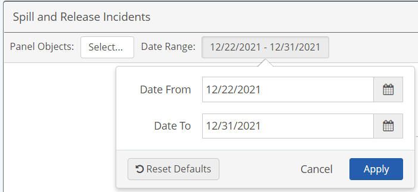
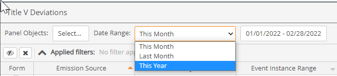
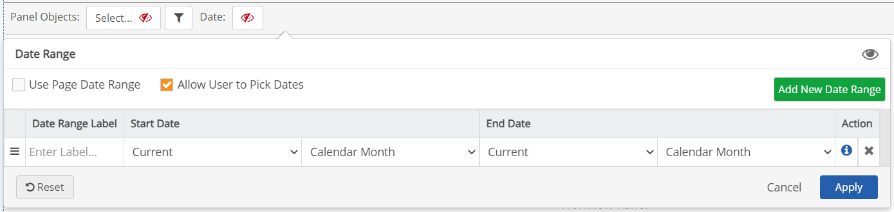
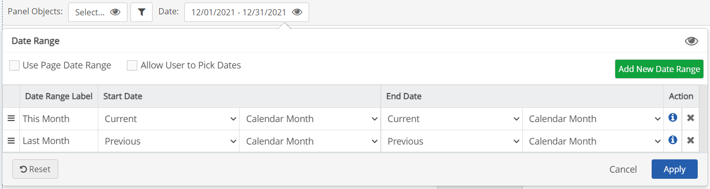

By default a panel will use the date range selected for the page. However, a date range selector may be enabled for a panel, which it will operate independently of the page date selector.
If "Use Page Date Range" is enabled (default), the panel date range selector will not be shown and the panel will use the date range selected for the page.
If "Use Page Date Range" is disabled, the panel date range selector will be enabled so you can choose a date range to use for the panel, independent of the page dates.
The date range may be chosen in two ways: From a list of calendar periods, or as custom dates selected from a calendar. A newly created panel will show only the custom date range option.

You can configure the panel to allow users to pick a date range from pre-defined periods. When configured, users may use the drop-down list option or the custom date picker.

To use the date range options list, you will need to first create the list of options you want to make available.
To enable a date range selector for a panel:
Uncheck "Use Page Date Range."
The initial default date period, if no periods have been configured, is the current month. You can edit the default, or add and configure the date ranges you want to use.

You must have at least two options in order to display the date period selector box on the panel. If you want the panel always to show only a pre-selected date range, you can configure the single default option as you like (for example, set the default display to Current Week instead of Current Month).
Allow User to Pick Dates: Unchecking this box will disable selection of custom dates. If there are options for the date range options list, the user will be able to pick from that list only, and the dates covered by the period will be displayed as read-only. If there is only one option for the option list, the user will not see the date period selector box and will see only the pre-configured date range displayed as read-only.
Enter a Label for the first option. Then choose the relative periods you want to use for the Start Date and End Date. (See options below.)
If you want to use Current Month as one option, you can just enter a label (i.e., "This Month"). You do not need a label if you want to allow only a single date period.
Select Add New Date Range to add another option for the list.
Enter the label to display for the second option and choose the relative start and end dates.

Click Add New Date Range again to add additional options.
To remove an option, click the X in the last column.
To re-order the list options, hover over the first column. Click and hold to drag and drop the item to the desired position.
The first item in the list will be the default option for users.
Click Save to save the page.
The date period selector box will now be displayed on the panel and your date range options show in the list.
Start Date options are:
The time will be always be 12:00 AM on the specified date or the first day of the period
End Date options are:
End time will always be 11:59 PM on the specified date or the last day of the period.